MOTOTRBO™ Portable Basic Service Manual
Version: MN003129A01-AE, Release Date: October 2025
Version: MN003129A01-AE, Release Date: October 2025
This manual includes all the information necessary to maintain peak product performance and maximum working time, using levels 1 and 2 maintenance procedures.
The information in this document is carefully examined, and is believed to be entirely reliable. However, no responsibility is assumed for inaccuracies. Furthermore, Motorola Solutions reserves the right to make changes to any products herein to improve readability, function, or design. Motorola Solutions does not assume any liability arising out of the applications or use of any product or circuit described herein; nor does it cover any license under its patent rights nor the rights of others.
Throughout the text in this publication, you may notice the use of warning, caution, and note notations. These notations are used to emphasize that safety hazards exist, and due care must be taken and observed.
The following major changes have been implemented in this manual since the previous edition:
| Edition | Description | Date |
|---|---|---|
| MN003129A01-AA | Initial Release | August 2017 |
| MN003129A01-AB | Updated battery eliminator part number to HW000405A02 in Service Aids, Customer Programming Software and Radio Tuning Setup sections. | May 2018 |
| MN003129A01-AC | Updated RF Antenna Adaptor part number to TL000068A01 in Service Aids and Customer Programming Software sections. Updated RF Antenna Adaptor Holder part number to HW000406A02 in Service Aids and Customer Programming Software sections. |
January 2020 |
| MN003129A01-AD | Updated Test Frequencies Table topic. | October 2023 |
| MN003129A01-AE | Updated the following topics:
Added Network Open Port List topic. Added SL3500Max as additional model in the following topics:
Removed Internal Frame Assembly part number (0104064J28) from Radio Exploded Mechanical View and Parts List topic. |
October 2025 |
The Motorola Solutions products described in this document may include copyrighted Motorola Solutions computer programs. Laws in the United States and other countries preserve for Motorola Solutions certain exclusive rights for copyrighted computer programs. Accordingly, any copyrighted Motorola Solutions computer programs contained in the Motorola Solutions products described in this document may not be copied or reproduced in any manner without the express written permission of Motorola Solutions.
No part of this document may be reproduced, transmitted, stored in a retrieval system, or translated into any language or computer language, in any form or by any means, without the prior written permission of Motorola Solutions, Inc.
MOTOROLA, MOTO, MOTOROLA SOLUTIONS, and the Stylized M Logo are trademarks or registered trademarks of Motorola Trademark Holdings, LLC and are used under license. All other trademarks are the property of their respective owners.
The purchase of Motorola Solutions products shall not be deemed to grant either directly or by implication, estoppel or otherwise, any license under the copyrights, patents or patent applications of Motorola Solutions, except for the normal nonexclusive, royalty-free license to use that arises by operation of law in the sale of a product.
This product may contain Open Source software used under license. Refer to the product installation media for full Open Source Legal Notices and Attribution content.
The European Union's WEEE directive and the UK's WEEE regulation require that products sold into EU countries and the UK must have the crossed-out wheelie bin label on the product (or the package in some cases). As defined by the WEEE directive, this crossed-out wheelie bin label means that customers and end users in EU and UK countries should not dispose of electronic and electrical equipment or accessories in household waste.
Customers or end users in EU and UK countries should contact their local equipment supplier representative or service center for information about the waste collection system in their country.
Please note that certain features, facilities, and capabilities described in this document may not be applicable to or licensed for use on a specific system, or may be dependent upon the characteristics of a specific mobile subscriber unit or configuration of certain parameters. Please refer to your Motorola Solutions contact for further information.
© 2025 Motorola Solutions, Inc. All Rights Reserved
The workmanship warranty guarantees against defects in workmanship under normal use and service.
Lithium-Ion 2300 mAh Battery |
12 Months |
| Chargers |
The capacity warranty guarantees 80% of the rated capacity for the warranty duration.
Lithium-Ion 2300 mAh Battery |
12 Months |
For information on warranty terms, see the Support page at https://www.motorolasolutions.com.
Motorola Solutions Inc. ("Motorola Solutions") warrants the Motorola Solutions manufactured Communication Products listed below ("Product") against defects in material and workmanship under normal use and service for a period of time from the date of purchase as scheduled below:
| Portable Radios | Two Years |
| Product Accessories (Excluding Batteries and Chargers) | One Year |
The radios additionally ship with a standard 1-year Repair Service Advantage (RSA) (for U.S. customers) or 1-year Extended Warranty (for Canada customers). However, at the time of order, you may choose to omit these warranties. For more RSA or Extended Warranty information, please refer to the price pages or contact the Customer Help Desk through http://www.motorolasolutions.com.
Motorola Solutions, at its option, will at no charge either repair the Product (with new or reconditioned parts), replace it (with a new or reconditioned Product), or refund the purchase price of the Product during the warranty period provided it is returned in accordance with the terms of this warranty. Replaced parts or boards are warranted for the balance of the original applicable warranty period. All replaced parts of Product shall become the property of Motorola Solutions.
This express limited warranty is extended by Motorola Solutions to the original end user purchaser only and is not assignable or transferable to any other party. This is the complete warranty for the Product manufactured by Motorola Solutions. Motorola Solutions assumes no obligations or liability for additions or modifications to this warranty unless made in writing and signed by an officer of Motorola Solutions. Unless made in a separate agreement between Motorola Solutions and the original end user purchaser, Motorola Solutions does not warrant the installation, maintenance or service of the Product.
Motorola Solutions cannot be responsible in any way for any ancillary equipment not furnished by Motorola Solutions which is attached to or used in connection with the Product, or for operation of the Product with any ancillary equipment, and all such equipment is expressly excluded from this warranty. Because each system which may use the Product is unique, Motorola Solutions disclaims liability for range, coverage, or operation of the system as a whole under this warranty.
This warranty sets forth the full extent of Motorola Solutions responsibilities regarding the Product. Repair, replacement or refund of the purchase price, at Motorola Solutions option, is the exclusive remedy.
This warranty is given in lieu of all other express warranties, implied warranties, including without limitation, implied warranties of merchantability and fitness for a particular purpose, are limited to the duration of this limited warranty. In no event shall Motorola Solutions be liable for damages in excess of the purchase price of the product, for any loss of use, loss of time, inconvenience, commercial loss, lost profits or savings or other incidental, special or consequential damages arising out of the use or inability to use such product, to the full extent such may be disclaimed by law.
Some states do not allow the exclusion or limitation of incidental or consequential damages or limitation on how long an implied warranty lasts, so the above limitation or exclusions may not apply.
This warranty gives specific legal rights, and there may be other rights which may vary from state to state.
You must provide proof of purchase (bearing the date of purchase and Product item serial number) in order to receive warranty service and, also, deliver or send the Product item, transportation, and insurance prepaid, to an authorized warranty service location.
Warranty service will be provided by Motorola Solutions through one of its authorized warranty service locations. If you first contact the company which sold you the Product, it can facilitate your obtaining warranty service.
You can also call Motorola Solutions at 1-800-927-2744 (US/Canada).
This warranty does not cover the following conditions:
Motorola Solutions will defend, at its own expense, any suit brought against the end user purchaser to the extent that it is based on a claim that the Product or parts infringe a United States patent, and Motorola Solutions will pay those costs and damages finally awarded against the end user purchaser in any such suit which are attributable to any such claim.
But such defense and payments are conditioned on the following:
Motorola Solutions will have no liability with respect to any claim of patent infringement which is based upon the combination of the Product or parts furnished hereunder with software, apparatus or devices not furnished by Motorola Solutions, nor will Motorola Solutions have any liability for the use of ancillary equipment or software not furnished by Motorola Solutions which is attached to or used in connection with the Product. The foregoing states the entire liability of Motorola Solutions with respect to infringement of patents by the Product or any parts thereof.
Laws in the United States and other countries preserve for Motorola Solutions certain exclusive rights for copyrighted Motorola Solutions software such as the exclusive rights to reproduce in copies and distribute copies of such Motorola Solutions software. Motorola Solutions software may be used in only the Product in which the software was originally embodied and such software in such Product may not be replaced, copied, distributed, modified in any way, or used to produce any derivative thereof. No other use including, without limitation, alteration, modification, reproduction, distribution, or reverse engineering of such Motorola Solutions software or exercise of rights in such Motorola Solutions software is permitted. No license is granted by implication, estoppel or otherwise under Motorola Solutions patent rights or copyrights.
This Warranty is governed by the laws of the State of Illinois, USA.
For more information regarding to your radio, please contact the following Motorola Solutions Service Centers to submit your queries. To enable faster response time to customer issues, Motorola Solutions provides support from multiple countries around the world.
| Office | Address | Telephone Number |
|---|---|---|
| Motorola Solutions Service Center | 1220 Don Haskins Drive, Suite A El Paso, TX 79936 | 1-800-422-4210 |
| Motorola Solutions Federal Technical Center | 10105 Senate Drive Lanham, MD 20706 | 1-800-969-6680 |
| Fax: 1-800-784-4113 | ||
| Motorola Solutions Canadian Technical Logistics Center | 41 Bentley Street Markham, Ontario L3R 3L1 | 416-997-2410 |
Some replacement parts, spare parts, and/or product information can be ordered directly from the Motorola Solutions local distribution organization or through Motorola Online.
Some parts may have become obsolete and are no longer available in the market due to cancellations by the supplier. If no Motorola Solutions part number is assigned, the part is normally not available from Motorola Solutions, or is not a user-serviceable part. Part numbers appended with an asterisk are serviceable by Motorola Solutions Depot only.
Place orders for replacement parts, kits, and assemblies directly on Motorola Solutions local distribution organization or through Motorola Online. When ordering replacement parts or equipment information, include the complete identification number. This applies to all components, kits, and chassis. If the component part number is not known, the order should include the number of the chassis or kit of which it is a part of, and sufficient description of the desired component to identify it.
To identify non-referenced spare parts, request for help from the Customer Care organization of a Motorola Solutions local area representative.
For customer service call, 1-888-325-9336. Available from Monday to Friday, 8:00 AM to 5:00 PM (Central Standard Time).
| Types of Orders | Contact Information |
|---|---|
| Mail Orders Mail orders are only accepted by the U.S. Federal Government Markets Division (USFGMD). |
Motorola Solutions 7031 Columbia Gateway Drive 3rd Floor – Order Processing Columbia, MD 21046 U.S.A. |
| Telephone Orders and Parts Identification | Radio Products and Solutions Organization (RPSO) (United States and Canada) 7:00 AM to 7:00 PM (Central Standard Time) Monday through Friday (Chicago, U.S.A.) 1-847-538-8023 (United States and Canada) |
U.S. Federal Government Markets Division (USFGMD) 1-800-826-1913 Federal Government Parts (Credit Cards Only) 8:30 AM to 5:00 PM (Eastern Standard Time) |
|
| Fax Orders | Radio Products and Solutions Organization (RPSO) (United States and Canada) 1-800-622-6210 1-847-576-3023 (United States and Canada) |
U.S. Federal Government Markets Division (USFGMD) 1-800-526-8641 |
Radio Products and Solutions Organization (RPSO) (United States and Canada)
1-800-927-2744
The portable radios are available in the following frequency ranges and power levels.
| VHF | 136–174 MHz | HP: 3 W (Digital), 2 W (Analog) LP: 0.5 W, 1 W |
| UHF | 403–480 MHz | HP: 3 W (Digital)
1Radio frequency >470 MHz, only 2 W for Digital
, 2 W (Analog)LP: 0.5 W, 1 W |
These digital radios are among the most sophisticated two-way radios available. They have a robust design for radio users who need high performance, quality, and reliability in their daily communications. This architecture provides the capability of supporting a multitude of legacy and advanced features resulting in a more cost-effective two-way radio communications solution.
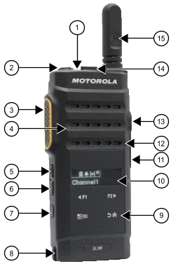
| Label | Feature | Description |
|---|---|---|
| 1 | Led Indicator | Red, Green and Orange light-emitting diodes indicate operating status. |
| 2 | On/Off/Information Button | Long press to power down the radio when the radio is on, and to power up the radio when the radio is switched off and being charged. Short press to power up the radio when the radio is switched off, to show the Radio Signal Strength Index (RSSI), and to check the battery charging status while the charging cable is attached. Short press twice to show the radio name. |
| 3 | Push-To-Talk (PTT) Button | Press to execute voice operations (for example Group call and Private Call). |
| 4 | Speaker | Outputs all tones and audio generated by the radio (e.g. features such as keypad tones and voice audio). |
| 5 and 6 | Volume Button | To increase and decrease the volume, and to select the action list when the side programmable button is pressed to call out the action list selections. |
| 7 | Side Programmable Button | Field programmable button using the CPS. |
| 8 | Charging Contact | Contact point for the standard multi-unit and single unit charger. |
| 9 | Touch Keypad | Capacitive touch sensing keypad |
| 10 | Display | Two line OLED (128x36) display. |
| 11 | Micro USB Connector | Programs the radio through a computer, and charges the radio through a wall charger. |
| 12 | Microphone | Allows voice to be sent when PTT or voice operations are activated. |
| 13 | Accessory Connector | Interface point for audio accessories to be used with the radio. |
| 14 | Channel Selector Switch | Toggle down to increase the channel and toggle up to decrease the channel. |
| 15 | Antenna | Provides the needed RF amplification when transmitting or receiving. |
| Position | 1 | 2 | 3 | 4 | 5 | 6 | 7 | 8 | 9 | 10 | 11 | 12 | 13 |
| Typical Model Number | AA | H | 8 | 8 | Y | C | D | 9 | S | A | 2 | A | N |
| Position | Description | Value |
|---|---|---|
| 1 | Region | AA = North America AZ = Asia LA = Latin America MD = Europe/Middle East/Africa |
| 2 | Type of Unit | H = Portable |
| 3 | Model Series | 88 = SL Series |
| 4 | ||
| 5 | Band | J = 136–174 MHz Q = 403–470 MHz Y = 403–480 MHz |
| 6 | Power Level | C = 2W, 3W Watt HP: 3 W (Digital)
2Radio frequency >470 MHz, only 2W for Digital.
, 2 W (Analog)LP: 0.5 W, 1 W |
| 7 | Physical Packages | D = OLED Display and LKP |
| 8 | Channel Information | 9 = Variable/Programmable Channel Spacing |
| 9 | Primary Operation | S = Wi-Fi and Bluetooth only V = Basic |
| 10 | Primary System Type | A = Conventional |
| 11 | Feature Level | 2 = Non-FM |
| 12 | Version Letter | N/A |
| 13 | Unique Variation | N = Standard Package |
"X" = Part is compatible with checked model.
"_" = The latest version kit. When ordering a kit, refer to your specific kit for the suffix number.
| SL3500e, SL3500Max, VHF, 136–174 MHz | ||
|---|---|---|
| Model | Description | |
| AAH88JCD9SA2AN | 136–174 MHz, Display Portable, with BT and Wi-Fi | |
| AAH88JCD9SA2AN-MAX | SL3500Max, 136-174 MHz, 3 W, Limited Keypad Portable, Capacity Max, with BT and Wi-Fi | |
| Item | Description | |
| X | PMLD4840_ | Display Front Kit Assembly |
| X | PMLD4842_ | Back Housing Kit Assembly |
| X | PMLD4839_S | Main Board Assembly Service Kit |
| X | PMAD4144_ | VHF Stubby Antenna (136–144 MHz), 5 cm |
| X | PMAD4145_ | VHF Stubby Antenna (144–156 MHz), 5 cm |
| X | PMAD4146_ | VHF Stubby Antenna (156–174 MHz), 5 cm |
| X | PMAD4154_ | VHF Whip Antenna (136–144 MHz), 9 cm |
| X | PMAD4155_ | VHF Whip Antenna (144–156 MHz), 9 cm |
| X | PMAD4156_ | VHF Whip Antenna (156–174 MHz), 9 cm |
| SL3500e, SL3500Max, UHF, 403–480 MHz | ||
|---|---|---|
| Model | Description | |
| AAH88YCD9SA2AN | 403–480 MHz, Display Portable with BT and Wi-Fi | |
| AAH88YCD9SA2AN-MAX | SL3500Max, 403–480 MHz, 3 W, Limited Keypad Portable, Capacity Max, with BT and Wi-Fi | |
| Item | Description | |
| X | PMLE5158_ | Display Front Kit Assembly |
| X | PMLE5160_ | Back Housing Kit Assembly |
| X | PMLE5157_S | Main Board Assembly Service Kit |
| X | PMAE4093_ | UHF Stubby Antenna (403–425 MHz), 4.5 cm |
| X | PMAE4094_ | UHF Stubby Antenna (420–445 MHz), 4.5 cm |
| X | PMAE4095_ | UHF Stubby Antenna (435–470 MHz), 4.5 cm |
| General | Value |
|---|---|
| Channel Spacing | 12.5, 25 kHz
325 kHz not available in the U.S.
|
| Channel Capacity | 128 |
| Frequency | VHF: 136–174 MHz UHF: 403–480 MHz |
| Dimensions (HxWxT) with standard battery |
125.7 x 55.0 x 22.7 mm |
| Weight with standard battery |
190 g |
| Power Supply | 3.7 V nominal |
| FCC Description | VHF: AZ489FT7107 UHF: AZ489FT7106 |
| IC Description | VHF: 109U-89FT7107 UHF: 109U-89FT7106 |
| Average battery life at 5/5/90 duty cycle with battery saver enabled | |
| Li-ion battery | VHF/UHF Analog: 11 hours Digital: 13.5 hours |
| Receiver | Value |
|---|---|
| Frequencies | VHF: 136–174 MHz UHF: 403–480 MHz |
| Channel Spacing | 12.5, 25 kHz
425 kHz not available in the U.S.
|
| Frequency Stability (-30° C to +60 °C, +25 °C Ref) | ±0.5 ppm |
| Analog Sensitivity (12 dB SINAD) | 0.3 µV 0.22 µV (typical) |
| Digital Sensitivity (5% BER) | 0.25 µV 0.19 µV (typical) |
| Intermodulation (TIA603D) | 70 dB |
| Adjacent Channel Selectivity (TIA603D) |
45 dB @ 12.5 kHz 70 dB @ 25 kHz
425 kHz not available in the U.S.
|
| Spurious Rejection (TIA603D) | 70 dB |
| Rated Audio | 0.5 W (internal) |
| Audio Distortion @ Rated Audio | 5% (3% typical) |
| Hum and Noise | -40 dB @ 12.5 kHz -45 dB @ 25 kHz
425 kHz not available in the U.S.
|
| Audio Response | TIA603D |
| Conducted Spurious Emission (TIA603D) | -57 dBm |
| Speaker Impedance | 4 Ohms (internal) |
| Voltage @ Rated Audio | 1.414 V (internal) |
| Transmitter | Value |
|---|---|
| Frequencies | VHF: 136–174 MHz UHF: 403–480 MHz |
| Channel Spacing | 12.5, 25 kHz
525 kHz not available in the U.S.
|
| Frequency Stability (-30 °C to +60 °C) | ±0.5 ppm |
| Power Output (Low Power) | 0.5 W, 1 W |
| Power Output (High Power) | 3 W (Digital)
6Radio frequency >470 MHz, only 2W for Digital.
, 2 W (Analog) |
| Modulation Limiting | ±2.5 kHz @ 12.5 kHz ±5.0 kHz @ 25 kHz
525 kHz not available in the U.S.
|
| FM Hum and Noise | -40 dB @ 12.5 kHz -45 dB @ 25 kHz
525 kHz not available in the U.S.
|
| Conducted / Radiated Emission | -36 dBm < 1 GHz -30 dBm > 1 GHz |
| Adjacent Channel Power | 60 dB @ 12.5 kHz 70 dB @ 25 kHz
525 kHz not available in the U.S.
|
| Audio Response | TIA603D |
| Audio Distortion | 3% (typical) |
| 4FSK Digital Modulation | 12.5 kHz Data: 7K60F1D and 7K60FXD 12.5 kHz Voice: 7K60F1E and 7K60FXE Combination of 12.5 kHz Data & Voice: 7K60F1W |
| Digital Vocoder Type | AMBE+2™ |
| Digital Protocol | ETSI-TS102361-1 ETSI-TS102361-2 ETSI-TS102361-3 |
| VHF Stubby/Whip Antenna | UHF Stubby Antenna | |||||
|---|---|---|---|---|---|---|
| 136–144 MHz | 144–156 MHz | 156–174 MHz | 403–425 MHz | 420–445 MHz | 435–470 MHz | 445–480 MHz |
| 136.8 ±5 kHz | 144 ±5 kHz | 156 ±45 kHz | 403.2 ±5 kHz | 420 ±5 kHz | 436.8 ±5 kHz | 446.4 ±5 kHz |
| 139.2 ±5 kHz | 148.8 ±5 kHz | 156.08 ±5 kHz | 407.92 ±5 kHz | 422.4 ±5 kHz | 441.6 ±5 kHz | 455.96 ±5 kHz |
| 141.6 ±5 kHz | 151.2 ±5 kHz | 156.16 ±5 kHz | 407.96 ±5 kHz | 431.6 ±5 kHz | 443.92 ±5 kHz | 456 ±5 kHz |
| 144 ±5 kHz | 153.6 ±10 kHz | 156.2 ±5 kHz | 408 ±5 kHz | 431.96 ±5 kHz | 443.96 ±5 kHz | 456.04 ±5 kHz |
| - | 155.6 ±5 kHz | 156.24 ±5 kHz | 408.04 ±5 kHz | 432 ±5 kHz | 444 ±5 kHz | 460.8 ±5 kHz |
| - | 155.72 ±5 kHz | 156.28 ±5 kHz | 417.6 ±5 kHz | 432.04 ±5 kHz | 444.04 ±5 kHz | 467.92 ±5 kHz |
| - | 155.76 ±5 kHz | 156.4 ±5 kHz | 420 ±5 kHz | 436.8 ±5 kHz | 444.4 ±5 kHz | 467.96 ±5 kHz |
| - | 155.8 ±5 kHz | 158.4 ±5 kHz | 422.4 ±5 kHz | 441.6 ±5 kHz | 446.4 ±5 kHz | 468 ±5 kHz |
| - | 155.84 ±5 kHz | 160.8 ±5 kHz | - | 443.92 ±5 kHz | 455.96 ±5 kHz | 468.04 ±5 kHz |
| - | 155.92 ±5 kHz | 163.2 ±5 kHz | - | 443.96 ±5 kHz | 456 ±5 kHz | 475.2 ±5 kHz |
| - | 156 ±45 kHz | 168 ±5 kHz | - | 444 ±5 kHz | 456.04 ±5 kHz | 479.96 ±5 kHz |
| - | - | 170.4 ±5 kHz | - | 444.04 ±5 kHz | 460.8 ±5 kHz | 480 ±5 kHz |
| - | - | 172.8 ±5 kHz | - | 444.4 ±5 kHz | 467.92 ±5 kHz | - |
| - | - | - | - | - | 467.96 ±5 kHz | - |
| - | - | - | - | - | 468 ±5 kHz | - |
| - | - | - | - | - | 468.04 ±5 kHz | - |
| Bluetooth | ||
|---|---|---|
| Version | Supports Bluetooth 4.0LE + EDR Specification | |
| Range | Class 2, 10 m | |
| Wi-Fi | ||
|---|---|---|
| Version | Supports 802.11 b/g/n, 2.4 GHz band | |
| Military Standards | ||||||||||
|---|---|---|---|---|---|---|---|---|---|---|
| Applicable MIL–STD | 810C | 810D | 810E | 810F | 810G
7Tested to MIL standard G which supersedes previous version.
|
|||||
| Methods | Procedures | Methods | Procedures | Methods | Procedures | Methods | Procedures | Methods | Procedures | |
| Low Pressure | 500.1 | I | 500.2 | II | 500.3 | II | 500.4 | II | 500.5 | II |
| High Temperature | 501.1 | I, II | 501.2 | I/A1, II/A1 | 501.3 | I/A1, II/A1 | 501.4 | I/Hot, II/Hot | 501.5 | I/A1, II/A1 |
| Low Temperature | 502.1 | I | 502.2 | I/C3, II/C1 | 502.3 | I/C3, II/C1 | 502.4 | I/C3, II/C1 | 502.5 | I/C3, II/C1 |
| Temperature Shock | 503.1 | I | 503.2 | A1/C3 | 503.3 | A1/C3 | 503.4 | I | 503.5 | I-C |
| Solar Radiation | 505.1 | II | 505.2 | I/Hot-Dry | 505.3 | I /Hot-Dry | 505.4 | I/Hot-Dry | 505.5 | I/A1 |
| Rain | 506.1 | I, II | 506.2 | I, II | 506.3 | I,II | 506.4 | I, III | 506.5 | I, III |
| Humidity | 507.1 | II | 507.2 | II/Hot-Humid | 507.3 | II /Hot-Humid | 507.4 | – | 507.5 | II/Aggravated |
| Salt fog | 509.1 | I | 509.2 | I | 509.3 | I | 509.4 | – | 509.5 | – |
| Blowing Dust | 510.1 | I | 510.2 | I | 510.3 | I | 510.4 | I | 510.5 | I |
| Blowing Sand | – | – | 510.2 | II | 510.3 | II | 510.4 | II | 510.5 | II |
| Vibration | 514.2 | VIII/CatF/ Curve-W, XI |
514.3 | I/Cat10, II/Cat3 | 514.4 | I/Cat10, II/Cat3 | 514.5 | I/Cat24, II/Cat5 | 514.6 | I/Cat24, II/Cat5 |
| Shock | 516.2 | I, II | 516.3 | I, IV | 516.4 | I, IV | 516.5 | I, IV | 516.6 | Ⅰ, Ⅴ, Ⅵ |
| Specifications | Value |
|---|---|
| Operating Temperature
8Operating temperature specification for a Li-lon battery is -10 °C to +60 °C.
|
-30 °C to +60 °C |
| Storage Temperature | -40 °C to +85 °C |
| Thermal Shock | Per MIL-STD |
| Humidity | Per MIL-STD |
| ESD | IEC61000-4-2 Level 3 |
| Dust and Water Intrusion | IEC60529 - IP54 |
| Packaging test | MIL-STD 810D and E |
This section lists the recommended test equipment and service aids, and information on field programming equipment. You can use this information in servicing and programming radios.
The list of equipment contained in the following table includes most of the standard test equipment required.
| Equipment | Characteristics | Example | Application |
|---|---|---|---|
| Service Monitor | Can be used as a substitute. | Viavi 3920B or Viavi 8800SX (https://www.viavisolutions.com) |
Frequency/deviation meter and signal generator for wide-range troubleshooting and alignment. |
| Digital RMS Multimeter
1Can use Service Monitor as substitute.
|
|
Fluke 179 (www.fluke.com) or equivalent | AC/DC voltage and current measurements. Audio voltage measurements. |
| RF Signal Generator
1Can use Service Monitor as substitute.
|
|
Keysight N5181A (http://www.keysight.com), Ramsey RSG1000B (www.ramseyelectronics.com), or equivalent | Receiver measurements |
| Oscilloscope
1Can use Service Monitor as substitute.
|
|
Tektronix TBS1052C (www.tektronix.com) or equivalent | Waveform measurements |
| Power Meter and Sensor
1Can use Service Monitor as substitute.
|
|
Bird 43 Thruline Watt Meter (www.bird-electronic.com) or equivalent | Transmitter power output measurements |
| RF Millivoltmeter |
|
Boonton 9240 (www.boonton.com) or equivalent | RF level measurements |
| Power Supply |
|
B&K Precision 9103 (www.bkprecision.com) or equivalent | Voltage supply |
The following table lists the service aids recommended for working on the radio. While all of these items are available from Motorola Solutions, most are standard workshop equipment items, and any equivalent item capable of the same performance may be substituted for the item listed.
| Motorola Solutions Part No. | Description | Application |
|---|---|---|
| RLN4460_ | Portable Test Set | Enables connection to the audio/accessory jack. Allows switching for radio testing. |
| PMKN4128_ | Portable Programming Cable with TTR | This cable connects the radio to a USB port for radio programming and data applications. |
| CB000262A01 | Micro USB Programming Cable | This cable connects the radio to a USB port for radio programming and data applications. |
| TL000068A01 | RF Antenna Adaptor | Adapts radio's antenna port to test equipment. |
| HW000406A02 | RF Antenna Adaptor Holder | Holds the RF antenna adaptor. |
| HW000405A02 | Battery Eliminator | Connects to radio via battery eliminator cable. |
| CB000233A01 | Audio Test Cable | This cable connects the radio to RLN4460_ Portable Test Set for test and measurement. |
| 6680702Z01 | Opener Back Housing | To dismantle the back housing from front housing. |
| NA | Flat Square Tip Plastic Tweezers | Removes components during disassembly. |
| NA | Flat Square Tip Steel Tweezers | Removes components during disassembly. |
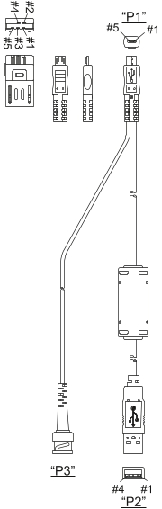
| Connection | |||
|---|---|---|---|
| P1 | P2 | P3 | Function |
| 1 | 1 | - | VCC(5 V) |
| 2 | 2 | - | DATA- |
| 3 | 3 | - | DATA+ |
| 4 | - | BNC Center Pin | TTR |
| 5 | 4 | BNC Shell | GROUND |
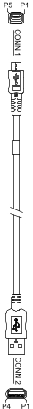
| Connection | ||
|---|---|---|
| CONN 1 | CONN 2 | Function |
| 1 | 1 | VBUS |
| 2 | 2 | DATA- |
| 3 | 3 | DATA+ |
| 5 | 4 | GROUND |
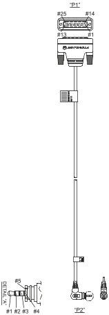
| Connection | ||
|---|---|---|
| P1 | P2 | Function |
| 1, 5 | 2 | SPK+ |
| 17 | 1 | MIC+ |
| 2, 7, 16 | 3 | MIC-, SPK- |
| 20 | 5 | PTT |
Your radio meets published specifications through its manufacturing process by using high-accuracy, laboratory-quality test equipment.
The recommended field service equipment approaches the accuracy of the manufacturing equipment with a few exceptions. This accuracy must be maintained with the calibration schedule recommended by the manufacturer.
Although your radio functions both in digital and analog modes, all testing is done in analog mode.
Supply voltage is provided using a 3.7 VDC power supply. The equipment required for alignment procedures is connected as shown in the Radio Tuning Setup chapter.
Initial equipment control settings must be as indicated in the following table:
| Service Monitor | Power Supply | Test Set |
|---|---|---|
| Monitor Mode: Power Monitor | Speaker set: A | |
| RF Attn: -70 | DC on/standby: Standby |
Speaker/load: Speaker |
| AM, CW, FM: FM | PTT: OFF | |
Oscilloscope Source: Mod Oscilloscope Horizontal: 10 ms/Div Oscilloscope Vertical: 2.5 kHz/Div Oscilloscope Trigger: Auto Monitor Image: Hi Monitor Bandwidth: Narrow Monitor Squelch: Middle setting Monitor Vol: 1/4 setting |
Current: 2.5 A |
| No. of Beeps | Description | Function |
|---|---|---|
| 1 | Carrier Squelch (CSQ) | RX: If Carrier is detected TX: Mic Audio |
| 2 | Tone Private-Line (TPL) | RX: Unsquelch if Carrier and Tone are detected TX: Mix Audio + Tone |
| 3 | Digital Mode (DIG) | RX: If Carrier is detected TX: Mic Audio |
| 4 | Unsquelch (USQ) | RX: Constant unsquelch TX: Mic Audio |
| Channel Selector Switch Position | Test Channel | UHF RX | UHF TX | VHF RX | VHF TX |
|---|---|---|---|---|---|
| 1 Low Power 9 High Power |
TX#1 or #9 RX#1 or #9 |
403.150 | 403.150 | 136.075 | 136.075 |
| 2 Low Power 10 High Power |
TX#2 or #10 RX#2 or #10 |
414.150 | 414.150 | 142.575 | 142.575 |
| 3 Low Power 11 High Power |
TX#3 or #11 RX#3 or #11 |
425.150 | 425.150 | 146.575 | 146.575 |
| 4 Low Power 12 High Power |
TX#4 or #12 RX#4 or #12 |
436.450 | 436.450 | 155.575 | 155.575 |
| 5 Low Power 13 High Power |
TX#5 or #13 RX#5 or #13 |
447.150 | 447.150 | 161.575 | 161.575 |
| 6 Low Power 14 High Power |
TX#6 or #14 RX#6 or #14 |
458.150 | 458.150 | 167.575 | 167.575 |
| 7 Low Power 15 High Power |
TX#7 or #15 RX#7 or #15 |
469.850 | 469.850 | 173.975 | 173.975 |
| 8 Low Power 16 High Power |
TX#8 or #16 RX#8 or #16 |
479.950 |
479.950 |
174.000 | 174.000 |
| Test Name | Communications Analyzer | Radio | Test Set | Comments |
|---|---|---|---|---|
| Reference Frequency | Mode: PWR MON 4th channel test frequency* Monitor: Frequency error Input at RF In/Out | TEST MODE, Test Channel 4 carrier squelch | PTT to continuously transmit (during the performance check) | Frequency error to be ±201 Hz for UHF ±68 Hz for VHF |
| Power RF | As above | As above | As above | Low Power: 0.5 W, 1 W (VHF/UHF) High Power (Analog): 2 W (VHF/UHF) High Power (Digital): 3 W (UHF 403–470 MHz and VHF) 2 W (UHF 470–480 MHz) |
| Voice Modulation | Mode: PWR MON 4th channel test frequency* atten to -70, input to RF In/Out Monitor: DVM: AC Volts Set 1 kHz Mod Out level for 0.025Vrms at test set, 80mVrms at AC/DC test set jack | As above | As above, meter selector to mic | Deviation: ≥ 4.0 kHz but ≤ 5.0 kHz (25 kHz Ch Sp). |
| Voice Modulation (internal) | Mode: PWR MON 4th channel test frequency* atten to -70, input to RF In/Out | TEST MODE, Test Channel 4 carrier squelch output at antenna | Remove modulation input | Press PTT switch on radio. Say “four” loudly into the radio mic. Measure deviation: ≥ 4.0 kHz but ≤ 5.0 kHz (25 kHz Ch Sp) |
| TPL Modulation | As above 4th channel test frequency* BW to narrow | TEST MODE, Test Channel 4 TPL | As above | Deviation: ≥500Hz but ≤1000Hz (25 kHz Ch Sp). |
| RF Power | DMR mode. Slot 1 Power and Slot 2 Power |
TEST MODE, Digital Mode, transmit without modulation |
Key up radio without modulation using Tuner |
TTR Enable is needed and IFR to be set to trigger mode with signal level ~1.5 V |
| FSK Error | DMR Mode. FSK Error | TEST MODE, Digital Mode, transmit with O.153 test pattern |
Key up radio with O.513 test pattern modulation using Tuner |
Not Exceed 5% |
| Magnitude Error |
DMR Mode. Magnitude error |
As above | As above | Not Exceed 1% |
| Symbol Deviation |
DMR Mode. Symbol Deviation |
As above | As above | Symbol Deviation should be within 648 Hz ±10% and 1944 Hz ±10% |
| Transmitter BER |
DMR Mode | As above | As above | Transmitter BER should be 0% |
* See Test Frequencies.
| Test Name | Communications Analyzer | Radio | Test Set | Comments |
|---|---|---|---|---|
| Reference Frequency | Mode: PWR MON 4th channel test frequency* Monitor: Frequency error Input at RF In/Out | TEST MODE, Test Channel 4 carrier squelch output at antenna | PTT to continuously transmit (during the performance check) | Frequency error to be ±201 Hz for UHF ±68 Hz for VHF |
| Rated Audio | Mode: GEN Output level: 1.0 mV RF 6th channel test frequency* Mod: 1 kHz tone at 3 kHz deviation Monitor: DVM: AC Volts | TEST MODE Test Channel 6 carrier squelch | PTT to OFF (center), meter selector to Audio PA | Set volume control to 0.4 Vrms (Through audio jack) |
| Distortion | As above, except to distortion | As above | As above | Distortion <5.0% |
| Sensitivity (SINAD) | As above, except SINAD, lower the RF level for 12 dB SINAD. | As above | PTT to OFF (center) | RF input to be <0.3μV |
| Noise Squelch Threshold (only radios with conventional system need to be tested) | RF level set to 1 mV RF | As above | PTT to OFF (center), meter selection to Audio PA, speaker/load to speaker | Set volume control to 0.4 Vrms (Through audio jack) |
| As above, except change frequency to a conventional system. Raise RF level from zero until radio unsquelches. | Out of TEST MODE; select a conventional system | As above | Unsquelch to occur at <0.25μV. Preferred SINAD = 9 – 10 dB | |
| Receiver BER |
IFR DMR mode. Signal generator with O.153 test pattern |
TEST MODE, Digital Mode, transmit with O.153 test pattern |
Read BER using Tuner. Adjust RF level to get 5% BER |
RF level to be <0.25μV for 5% BER |
| Receiver Rated Audio |
IFR DMR Mode. Signal generator with 1031 test pattern |
Test Mode, Digital Mode, receive 1031 test pattern |
RF level = -47dBm. Set audio analyzer to read Vrms. Adjust volume to get rated audio |
Adjust volume until Vrms = 0.4 V (Through audio jack) |
| Receiver Audio Distortion |
IFR DMR Mode. Signal generator with 1031 test pattern |
As above | As above. Then set audio analyzer to measure distortion |
Not exceed 5% |
* See Test Frequencies
Radio switches to Display Test Mode.
The radio displays the increasing horizontal bars upon any front panel button press.
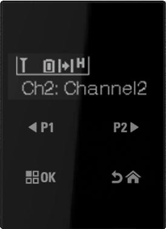
This chapter provides an overview of the MOTOTRBO Customer Programming Software (CPS), Tuner, and AirTracer applications, which are all designed for use in Windows 2000 onwards environment.
These programs are available in one kit as listed in the following table. An Installation Guide is also included with the kit.
| Description | Part Number |
|---|---|
| MOTOTRBO CPS, Tuner, and AirTracer Applications CD | RVN5115_ GMVN5141_ |
Program the radio using the following setup.
Use a fully charged battery or battery eliminator, HW000405A02.
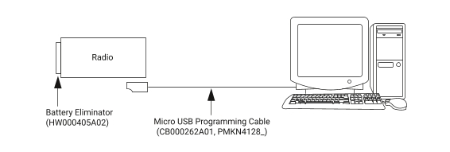
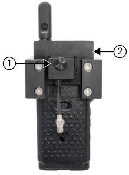
| Label | Description |
|---|---|
| 1 | RF Antenna Adaptor (TL000068A01) |
| 2 | RF Antenna Adaptor Holder (HW000406A02) |
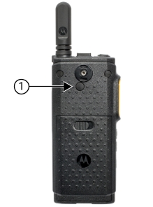
| Label | Description |
|---|---|
| 1 | RF Plug (EN000047A01) |
The MOTOTRBO AirTracer application tool captures over-the-air digital radio traffic and saves the data captured into a file.
The AirTracer application tool can also retrieve and save internal error logs from MOTOTRBO radios. The saved files can be analyzed by trained Motorola Solutions personnel to suggest improvements in system configurations or to help isolate problems.
Retuning is not required if service kit has been replaced and factory tuned. However, check service kit for performance before use.
Before keying up the radio, set the Bias DAC for the appropriate final device bias current. If the bias is not properly set, it may cause damage to the transmitter.
A personal computer (PC) with Windows 8 and above and a tuner program are required to tune the radio. See the following figure to perform the tuning procedures.
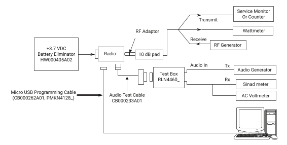
| Port | Port Type | Application |
|---|---|---|
| 8002 | TCP | XNL Port |
| 8004 | TCP | Secure XNL port using TLS-PSK |
| 8501 | TCP | AT Debug (for internal use only) |
| 8502 | TCP | GPS Passthrough (for internal use only) |
| 4064 | UDP | Air Tracer (for internal use only) |
| 4009 | UDP | OTAP RUDP (for internal use only) |
| 4010 | UDP | OTAP Switchover (for internal use only) |
| 4011 | UDP | Net Filter (for internal use only) |
| 4014 | UDP | XCMP over CAI (for internal use only) |
| 4070 | UDP | Feature Exchange Protocol (for internal use only) |
| 64414 | UDP | OTAR (for internal use only) |
This chapter provides details about the following:
Periodic visual inspection and cleaning are recommended.
Check that the external surfaces of your radio are clean, and that all external controls and switches are functional. It is not recommended to inspect the interior electronic circuitry.
The following procedures describe the recommended cleaning agents and the methods to clean the external and internal surfaces of your radio.
External surfaces include the front cover, housing assembly, and battery. These surfaces should be cleaned whenever a periodic visual inspection reveals the presence of smudges, grease, and/or grime.
Only clean internal surfaces when your radio is disassembled for service or repair.
Complementary Metal Oxide Semiconductor (CMOS) and Laterally Diffused Metal Oxide Semiconductor (LDMOS) devices are used in this family of radios, and are susceptible to damage by electrostatic or high-voltage charges.
Damage can be latent, resulting in failures occurring weeks or months later. Therefore, special precautions must be taken to prevent device damage during disassembly, troubleshooting, and repair.
Handling precautions are mandatory for CMOS and LDMOS circuits and are especially important in low humidity conditions. These precautions must be taken when disassembling or reassembling the radio. Refer to the following caution statements before disassembling your radio.
Environmentally Preferred Products (EPP) were developed and assembled using environmentally preferred components and solder assembly techniques. EPP are in compliant with the European Union's Restriction of Hazardous Substances (ROHS 2) Directive 2011/65/EU and Waste Electrical and Electronic Equipment (WEEE) Directive 2012/19/EU. To maintain product compliance and reliability, use only the Motorola Solutions parts specified in this manual.
For the identification of lead (Pb) free assemblies, all EPP products carry the EPP Marking on the Printed Circuit Board (PCB). The following images show examples of the EPP Marking, adhering to the JEDEC Standard No. 97. This marking provides information for performing assembly, servicing, and recycling operation on this product. The EPP Marking takes the form of a label or marking on the PCB.
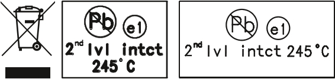
Any rework or repair on Environmentally Preferred Products must be done using the appropriate lead-free solder wire and lead-free solder paste. These requirements are stated in the following tables:
| Motorola Solutions Part Number | Alloy | Flux Type | Flux Content by Weight | Melting Point | Supplier Part number | Diameter | Weight |
|---|---|---|---|---|---|---|---|
| 1088929Y01 | 95.5Sn/3.8Ag/0.7Cu | RMA Version | 2.7–3.2% | 217 °C | 52171 | 0.015 in. | 1 lb spool |
| Manufacturer Part Number | Viscosity | Type | Composition and Percent Metal | Liquid Temperature |
|---|---|---|---|---|
| NC-SMQ230 | 900–1000KCPs Brookfield (5 rpm) | Type 3 (-325/+500) | (95.5%Sn-3.8%Ag-0.7%Cu) 89.3% | 217 °C |
If damaged parts are replaced, identical parts must be used. If the identical replacement part is not locally available, check the parts list for the proper Motorola Solutions part number and order the part.
This family of radios uses bonded, multilayer, printed circuit boards. Special considerations are required when soldering and desoldering components as the inner layers are not accessible. The plated-through holes can interconnect multiple layers of the printed circuit. Therefore, exercise care to avoid pulling the plated circuit out of the hole.
When soldering near a connector:
For soldering components with Hot-Air or infrared solder systems, check the user guide of your solder system to get information on solder temperature and time for the different housings of the integrated circuits and other components.
When disassembling and reassembling the radio, it is important to pay particular attention to the snaps and tabs, and how parts align with each other.
The following tools are required for disassembling and reassembling the radio:
This section describes the detailed disassembly procedure of your radio.
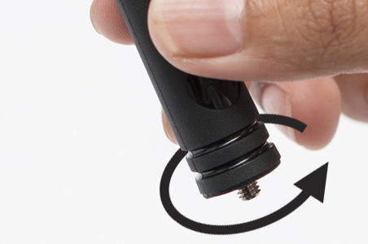
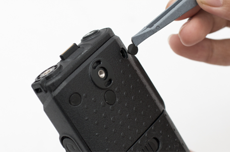
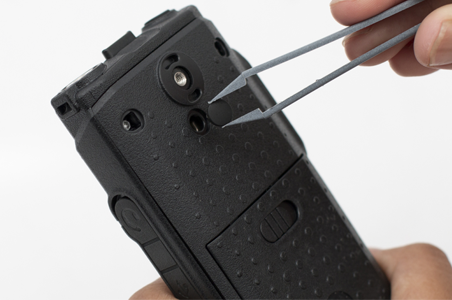
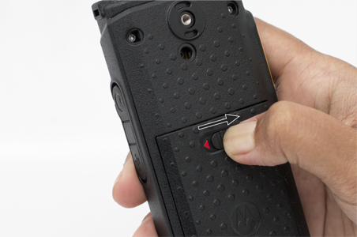
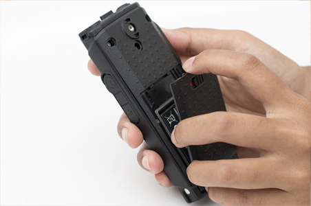
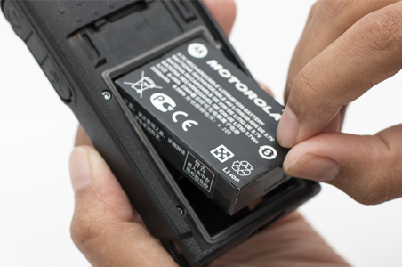
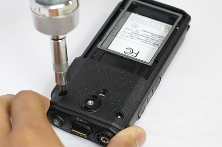
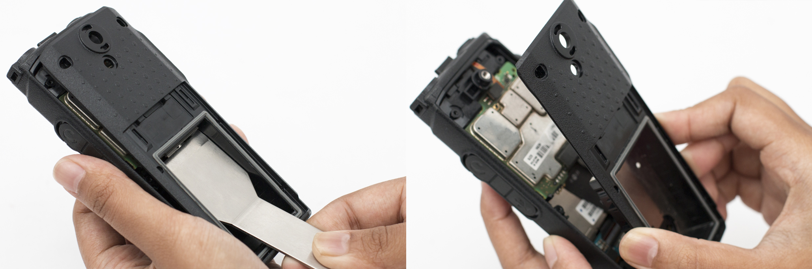
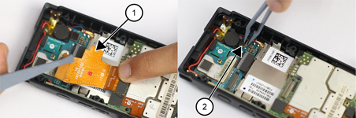
| Label | Description |
|---|---|
| 1 | Main Flex |
| 2 | Cap-sense Flex |
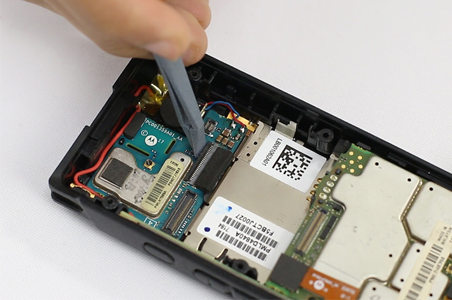
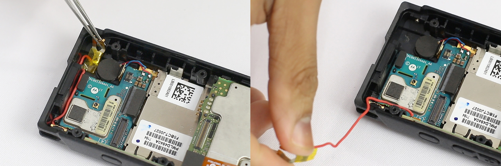
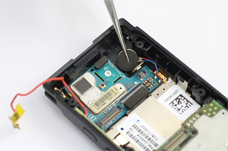
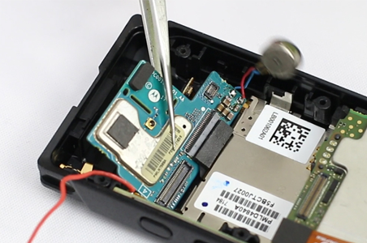
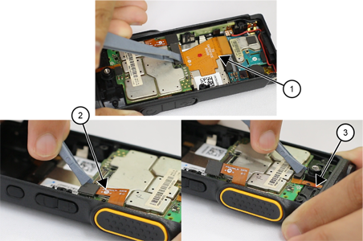
| Label | Description |
|---|---|
| 1 | Main Board Flex |
| 2 | PTT Flex |
| 3 | Top Control Flex |
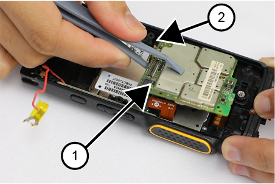
| Label | Description |
|---|---|
| 1 | Main PCB |
| 2 | PCB Catch |
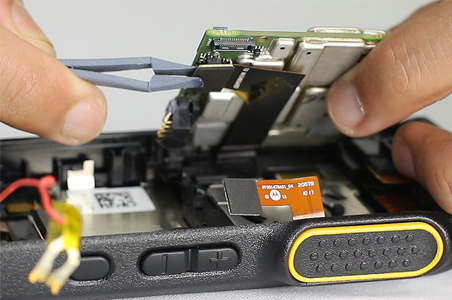
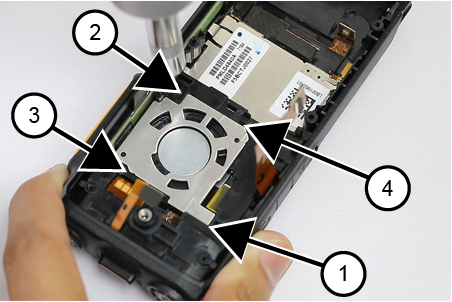
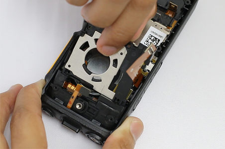
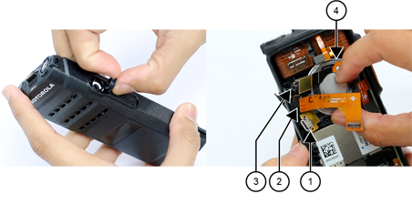
| Label | Description |
|---|---|
| 1 | Micro USB |
| 2 | Microphone |
| 3 | Audio Jack |
| 4 | Speaker |
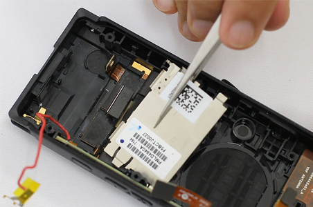
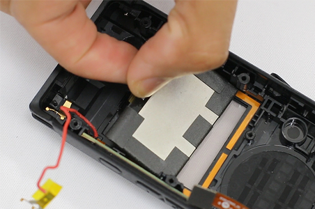
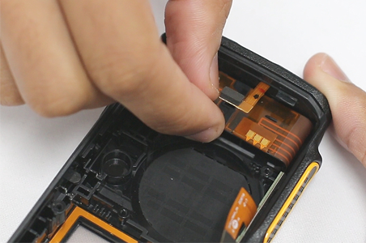
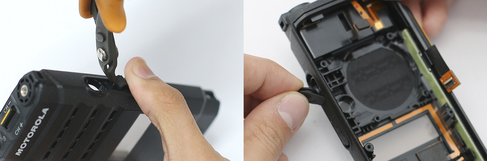
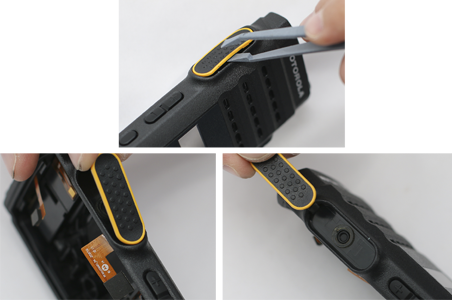
This section describes the detailed reassembly procedure of your radio.
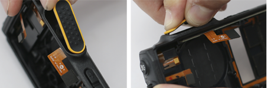
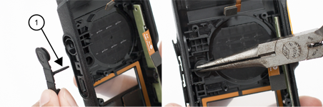
| Label | Description |
|---|---|
| 1 | Dust Cover Tail |
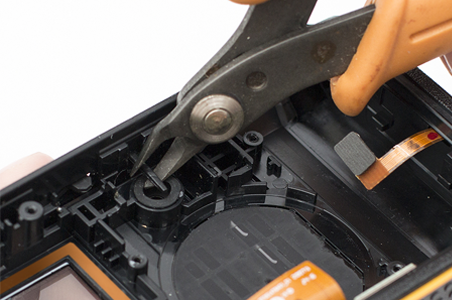
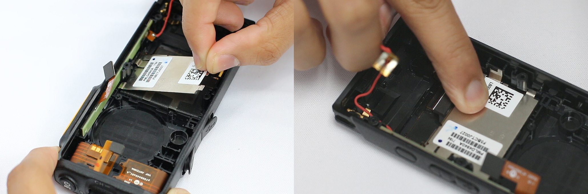
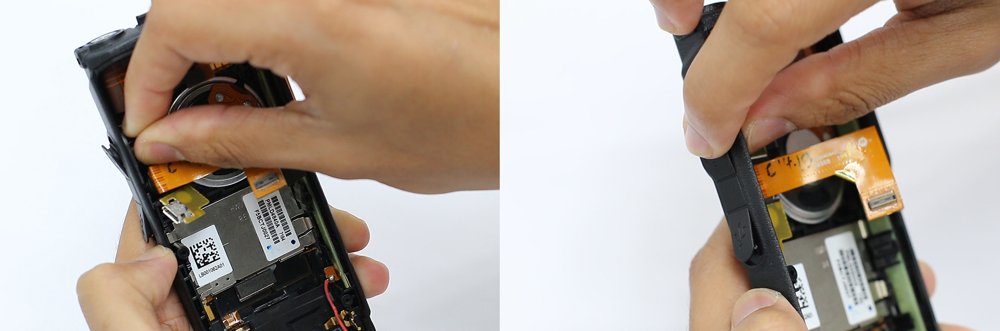
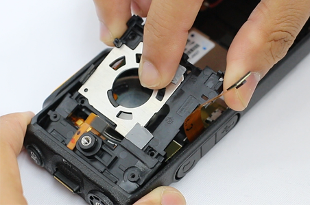
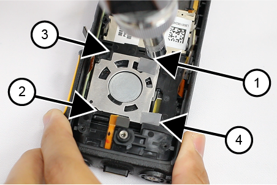
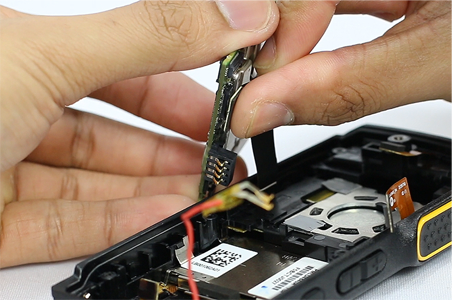
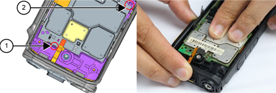
| Label | Description |
|---|---|
| 1 | Tongue in underneath this feature |
| 2 | Snap on to this feature |
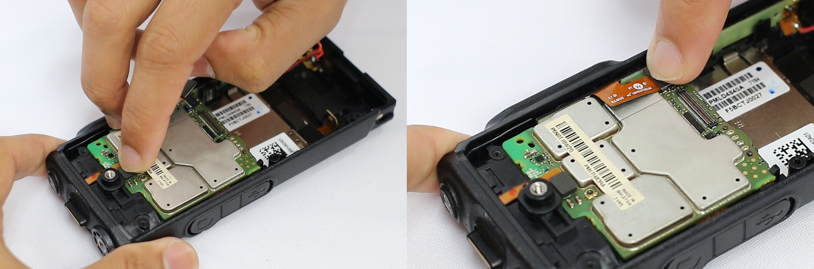
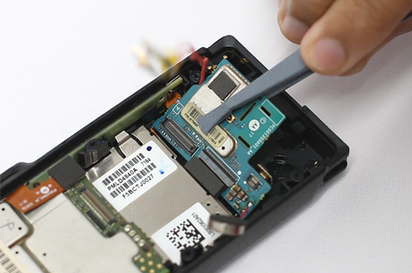
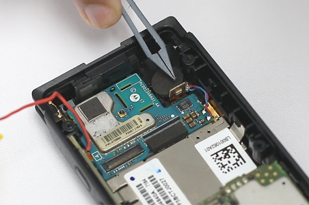
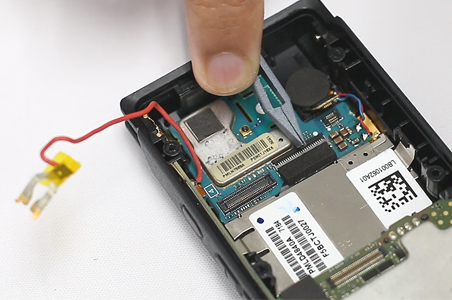
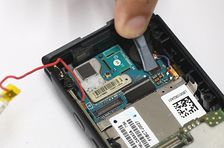
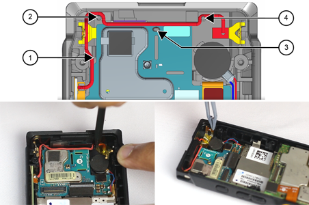
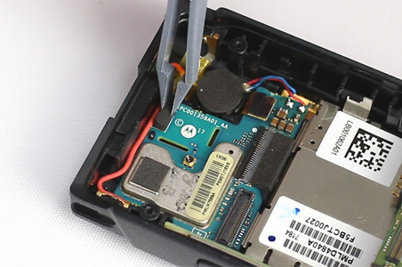
| Item | Description | Part Number | |
|---|---|---|---|
| 1 | Product Nameplate SL3500e | 33012015070 | |
| Product Nameplate SL3500Max | 33012015081 | ||
| 2 | Front Kit Assembly (Includes sub-items 2.1 to 2.8.) | UHF Wi-Fi: PMLE5158_ VHF Wi-Fi: PMLD4840_ |
|
| 2.1 | Front Housing Assembly | Part of Front Kit Assembly | |
| 2.2 | Internal Antenna Frame Assembly | Part of Front Kit Assembly | |
| 2.3 | AJ-SPK Micro USB-Mic Flex Assembly | Part of Front Kit Assembly | |
| 2.4 | Internal Frame Assembly | This item is not serviceable. | |
| 2.5 | Screw, Internal Frame | Part of Front Kit Assembly | |
| 2.6 | Dust Cover, Audio Jack, and USB | Part of Front Kit Assembly | |
| 2.7 | Main Flex | Part of Front Kit Assembly | |
| 2.8 | PTT Paddle Assembly | 0104077J44 | |
| 3 | Interface Board, Assembly (Vibrator included) |
PMLN7569_S (Wi-Fi) | |
| 4 | Main PCB Assembly | UHF: PMLE5157_S VHF: PMLD4839_S |
|
| 5 | Back Housing Assembly | UHF: PMLE5160_ VHF: PMLD4842_ |
|
| 6 | Screw Plug | EN000037A01 | |
| 7 | RF Plug | EN000047A01 | |
| 8 | Screw, Back Housing | FN000069A01 | |
| 9 | Battery | PMNN4468_ | |
| 10 | Battery Door Kit Assembly | PMLN7074_ | |
| 11 | Antenna | See Additional Parts List Table below. | |
| Antenna | Description | Part Number |
|---|---|---|
| UHF | PMAE4093_ | UHF, 403–425 MHz, Stubby Antenna, 4.5 cm |
| UHF | PMAE4094_ | UHF, 420–445 MHz, Stubby Antenna, 4.5 cm |
| UHF | PMAE4095_ | UHF, 435–470 MHz, Stubby Antenna, 4.5 cm |
| VHF | PMAD4144_ | VHF, 136–144 MHz, Stubby Antenna, 5.0 cm |
| VHF | PMAD4145_ | VHF, 144–156 MHz, Stubby Antenna, 5.0 cm |
| VHF | PMAD4146_ | VHF, 156–174 MHz, Stubby Antenna, 5.0 cm |
| VHF | PMAD4154_ | VHF, 136–144 MHz, Whip Antenna, 9.0 cm |
| VHF | PMAD4155_ | VHF, 144–156 MHz, Whip Antenna, 9.0 cm |
| VHF | PMAD4156_ | VHF, 156–174 MHz, Whip Antenna, 9.0 cm |
The following table lists the various screws by part number and description, followed by the torque values in different units of measure. Torque all screws to the recommended value when assembling the radio.
| Part Number | Description | Qty | Driver/ Socket | Torque | ||
|---|---|---|---|---|---|---|
| N-m | lbs-in | kgf-cm | ||||
| FN000069A01 | Main Screw | 6 | T06 Torx Plus | 0.11–0.14 | 1.0–1.2 | 1.2–1.4 |
| 0378212A02 | Screw, Internal Frame | 4 | T06 Torx Plus | 0.12–0.15 | 1.1–1.3 | 1.3–1.5 |
This chapter contains error codes and board replacement procedures. If the board does not pass all the performance checks in Transceiver Performance Testing or exhibits an error code listed below, then the circuit board should be replaced. If repair requires knowledge of details of component level troubleshooting, please send radio to a Motorola Solutions Service Center or Motorola Solutions Authorized Dealers .
Upon powering up, the radio performs certain tests to determine if its basic electronics and software are in working order. Any error detected has an associated error code that is presented on the radio display.
These error codes are intended to be used by a service technician when the radio generates the Self-Test Fail Tone. If these tests are successfully completed, the radio will generate the Self-Test Tone.
There are two classes of detectable errors: fatal and non-fatal.
| Error Code | Description | Error Type | Corrective Action |
|---|---|---|---|
| ERROR 01/02 | Call ID or associated aliases codeplug block checksum is wrong. | Non-Fatal | Normal communication is still possible, but the user may be inconvenienced. Reprogram codeplug. |
| ERROR 01/22 | Tuning Codeplug block checksum is wrong. | Non-Fatal | Normal communication is still possible. |
| Fatal Error 01/82 | External Codeplug block checksum is wrong. | Fatal | Reprogram codeplug. |
| Fatal Error 01/92 | Secure Codeplug checksum error. | Fatal | Reprogram codeplug. |
| Fatal Error 01/93 | Codeplug error. | Fatal | Reprogram codeplug. |
| Fatal Error 01/A2 | Tuning Codeplug block checksum is wrong. | Fatal | Reprogram codeplug. |
| Fatal Error 01/81 | ROM Checksum is wrong. | Fatal | Reprogram FLASH Memory, then retest. |
| Fatal Error 01/88 | Radio RAM test failure. | Fatal | Retest radio by turning it off and turning it on again. |
| Fatal Error 01/90 or Fatal Error 02/90 | General hardware test failure. | Fatal | Retest radio by turning it off and turning it on again. |
| Fatal Error 02/81 | DSP ROM Checksum is wrong. | Fatal | Reprogram FLASH Memory, then retest. Send radio to the nearest Motorola Service Centers or Authorized Motorola Service Centers. |
| Fatal Error 02/82 | DSP RAM1 test failure. | Fatal | Retest radio by turning it off and turning it on again. |
| Fatal Error 02/84 | DSP RAM2 test failure. | Fatal | Retest radio by turning it off and turning it on again. |
| Fatal Error 02/88 | DSP RAM test failure. | Fatal | Retest radio by turning it off and turning it on again. |
| Fatal Error 02/C0 | DSP ROM Checksum is wrong. | Fatal | Retest radio by turning it off and turning it on again. |
| No Display | Display module is not connected properly. Display module is damaged. | Fatal | Check connection between main board and display module. Replace with new display module. Send radio to the nearest Motorola Solutions Service Centers or Authorized Motorola Solutions Service Dealers. |
During radio operation, your radio performs dynamic tests to determine if your radio is working properly. Problems detected during these tests are presented as error codes on your radio display.
Use the following table to aid in understanding particular operational error codes.
| Error Code/Message | Description | Error Type | Corrective Action |
|---|---|---|---|
| FAIL 001 | Synthesizer Out-of-Lock | Non-fatal | Reprogram the codeplug. Refer to Detailed Service Manual. |
| FAIL 002 | Personality checksum or system block error | Non-fatal | Reprogram the codeplug. |
Motorola Solutions provides a list of accessories to improve the productivity of your radio.
| Part Number | Description |
|---|---|
| PMAD4144_ | VHF, 136–144 MHz, 5.0 cm, Stubby Antenna |
| PMAD4145_ | VHF, 144–156 MHz, 5.0 cm, Stubby Antenna |
| PMAD4146_ | VHF, 156–174 MHz, 5.0 cm, Stubby Antenna |
| PMAD4154_ | VHF, 136–144 MHz, 9.0 cm, Whip Antenna |
| PMAD4155_ | VHF, 144–156 MHz, 9.0 cm, Whip Antenna |
| PMAD4156_ | VHF, 156–174 MHz, 9.0 cm, Whip Antenna |
| PMAE4093_ | UHF, 403–425 MHz, 4.5 cm, Stubby Antenna |
| PMAE4094_ | UHF, 420–445 MHz, 4.5 cm, Stubby Antenna |
| PMAE4095_ | UHF, 435–470 MHz, 4.5 cm, Stubby Antenna |
| PMAE4099_ | UHF, 445–480 MHz, 4.5 cm, Stubby Antenna |
| Part Number | Description |
|---|---|
| PMNN4468_ | BT100x Lithium-Ion 2300 mAh Battery Pack |
| Part Number | Description |
|---|---|
| PMLN6074_ | Nylon Wrist Strap |
| PMLN7076_ | Flexible Quick Release Hand Strap |
| PMLN7128_ | Heavy-Duty Swivel Belt Clip |
| PMLN7190_ | Swivel Carry Holster |
| Part Number | Description |
|---|---|
| PMLN7093_ | Standard Multi-Unit Charger |
| PMLN7094_ | Standard Single Unit Charger |
| PMLN7101_ | Standard Multi-Unit Charger, US/NA Plug |
| PMLN7109_ | Standard Single Unit Charger, US/NA Plug |
| 25009298001 | Micro-USB Power Supply, 5 V 1 A, US/NA Plug |
| PS000227A01 | Power Supply Adaptor 100 V–240 V, Micro-USB |
| Part Number | Description |
|---|---|
| PMLN7156_ | Earbud with In-line Mic/PTT, MagOne |
| PMLN7157_ | 2-Wire with Transparent Tube, Black |
| PMLN7158_ | 1-Wire Surveillance Earpiece, In-Line Mic and PTT |
| PMLN7159_ | Adjustable D-Style with In-Line Mic and PTT |
| PMLN7189_ | Swivel Earpiece, In-line Mic and PTT |
| RLN6242_ | Transparent Acoustic Tube |
| 5080384F72 | High Noise Yellow Foam Earpieces |
| Part Number | Description |
|---|---|
| PMLN7074_ | Battery Door |
| Part Number | Description |
|---|---|
| NNTN8191_ | Push-to-Talk Module, without Charger |
| NNTN8294_ | 1-Wire Earbud, 29 cm Cord, Black |
| NNTN8295_ | 1-Wire Earbud, 116 cm Cord, Black |
| NNTN8299_ | Eartips for Operations Critical Wireless Earbuds (Replacement for NNTN8294_ and NNTN8295_) |
| NNTN8385_ | Wireless Neckloop Y-adapter and retention hook for Completely Discreet Kit |
| NNTN8433_ | Discreet Surveillance Kit |
| PMLN6463_ | Business Wireless Accessory Kit |
| PMLN7052_ | Operations Critical Wireless 1-Wire Surveillance Kit with Translucent Tube |
| RLN4922_
1Contact your dealer on the availability of these accessories.
|
Completely Discreet Earpiece Kit |
| RLN6490_ | XBT Behind-the-Neck, Non-secure Wireless Heavy Duty Headset |
| RLN6491_ | XBT Overhead, Non-secure Wireless Heavy Duty Headset |
| RLN6550_
1Contact your dealer on the availability of these accessories.
|
Swivel Earpiece with In-Line Microphone |
| 89409N | Non-Secure HK200 Mobile Bluetooth Headset |
| NNTN8125_ | Non-secure Wireless Accessory Kit, Operational Critical Wireless Earpiece, standard pair, 12 in. Cable |
| NNTN8126_ | Non-Secure Wireless Headset and Push-to-Talk Device with Push-to-Talk Audio, 9.5 in. Cable |
| NNTN8127_ | Non-Secure Wireless Push-to-Talk Device |
| NTN8127_N | Non-Secure Bluetooth Wireless Push-to-Talk Device |
| NNTN8189_ | Non-Secure Wireless Headset and Push-to-Talk Device with Push-to-Talk Audio, 12 in. Cable |
| NTN2572_ | Earpiece 12 in. Cable (Replacement for NNTN8125_) |
| NTN2575_ | Earpiece 9.5 in. Cable (Replacement for NNTN8126_) |
| RLN6500_ | Bluetooth Accessory Kit with NA Power Supply |
Only Motorola Solutions Service Center or Motorola Solutions Authorized Dealers can perform Limited Level 3 Servicing.
Refer to "Disassembly/Reassembly Procedures" chapter for details of the following:
For soldering components with Hot-Air or infra red solder systems, check the User Guide of your solder system to get information on solder temperature and time for the different housings of the integrated circuits and other components.
| Circuit Ref | Motorola Solutions Part Number | Description |
|---|---|---|
| F4020 | 6515076H01 | Fuse 25 V 5A |
| M4020 | CN000797A01 | Battery Contact |
This glossary contains an alphabetical listing of terms and their definitions that are applicable to portable and mobile subscriber radio products. All terms do not necessarily apply to all radios, and some terms are merely generic in nature.